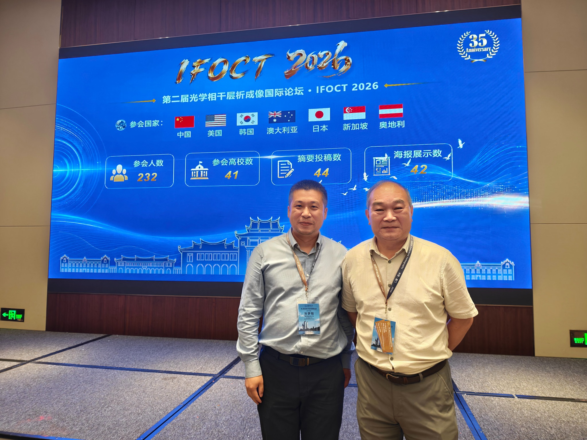
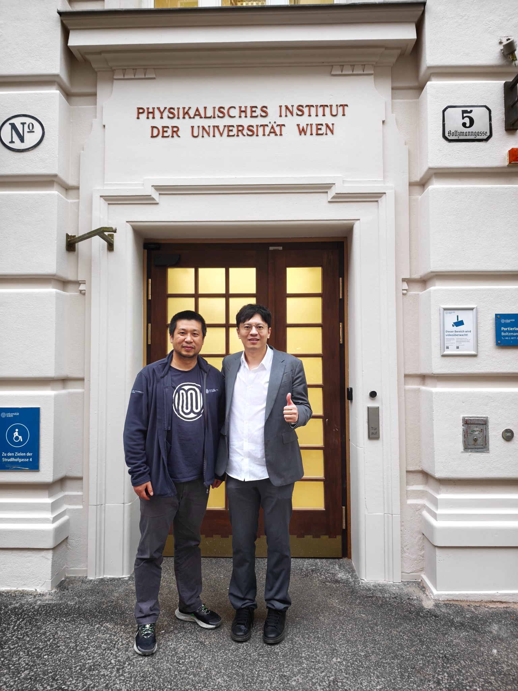

Optical coherence tomography
High-resolution structural and functional tissue imaging for dermatology, oncology and vascular disease.
Biomedical optics · Vienna, Austria
Associate Professor
Center for Medical Physics and Biomedical Engineering · Medical University of Vienna
I develop optical imaging technologies that reveal tissue structure, microvasculature and molecular processes—bridging optical coherence tomography, photoacoustics and translational medicine.
 OCT · PA · AI
OCT · PA · AII am an Associate Professor at the Medical University of Vienna. My research combines imaging physics, instrumentation, artificial intelligence and clinical translation, with a particular focus on OCT, OCT angiography and photoacoustic imaging.
High-resolution structural and functional tissue imaging for dermatology, oncology and vascular disease.
Optical absorption contrast for visualising molecular composition, vasculature and tumour biology.
Integrated OCT–photoacoustic systems and AI-enhanced quantitative analysis for 3D biological models.
Contrast-enhanced OCT and photoacoustic tomography for revealing drug-tolerant persister cells in cancer.
€6.19MSwitchable magneto-plasmonic contrast agents and molecular imaging technologies.
€0.77M work packageLinking skin morphology and vasculature with disease using optical imaging.
€270KA comprehensive OCT solution for skin cancer from cells to vessels.
€49.5KRecent representative work. Visit Google Scholar for the complete record.
Light: Science & Applications · 2026
Journal of Physics: Photonics · 2026
Journal of Biomedical Optics · 2025 · Featured Article
Diagnostics · 2025
Scientific Data · 2025
MCAA China Chapter · 2026
Appointed for the term 1 January–31 December 2026, contributing to professional development and community activities for Marie Curie scholars.
Editorial service · Since 24 July 2026
Serving on the journal’s editorial board in OCT, photoacoustic imaging and multimodal biomedical imaging.
Editorial service · Since 5 August 2026
Serving as an Associate Editor with expertise in optical coherence tomography and photoacoustic imaging.

12 July 2026 · IFOCT 2026
With Prof. Ruikang Wang of the University of Washington, chair of IFOCT 2026. I served as organizing committee chair and delivered a plenary talk.

25 March 2026 · Vienna
Prof. Jiang Yang of Sun Yat-sen University visited my laboratory and delivered an invited talk at our centre.
06 · Contact
Medical University of Vienna
Währinger Gürtel 18–20, AKH 4L
1090 Vienna, Austria